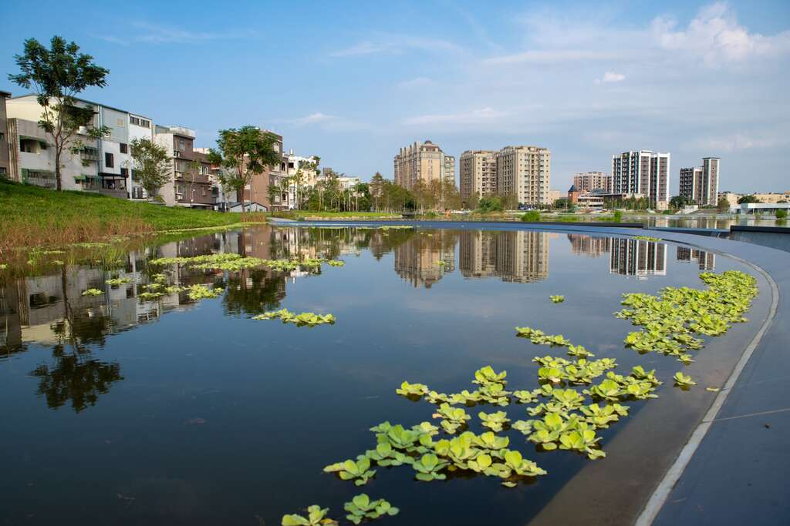
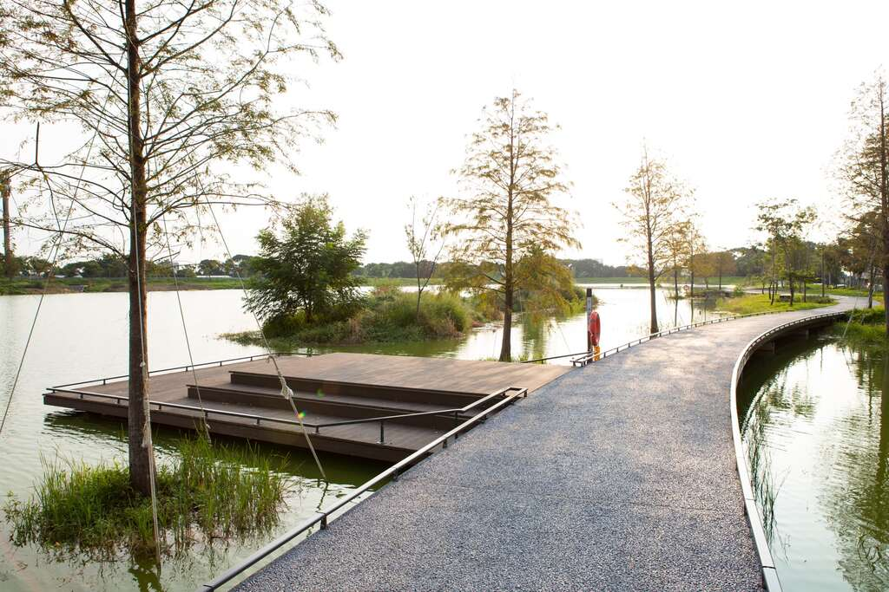
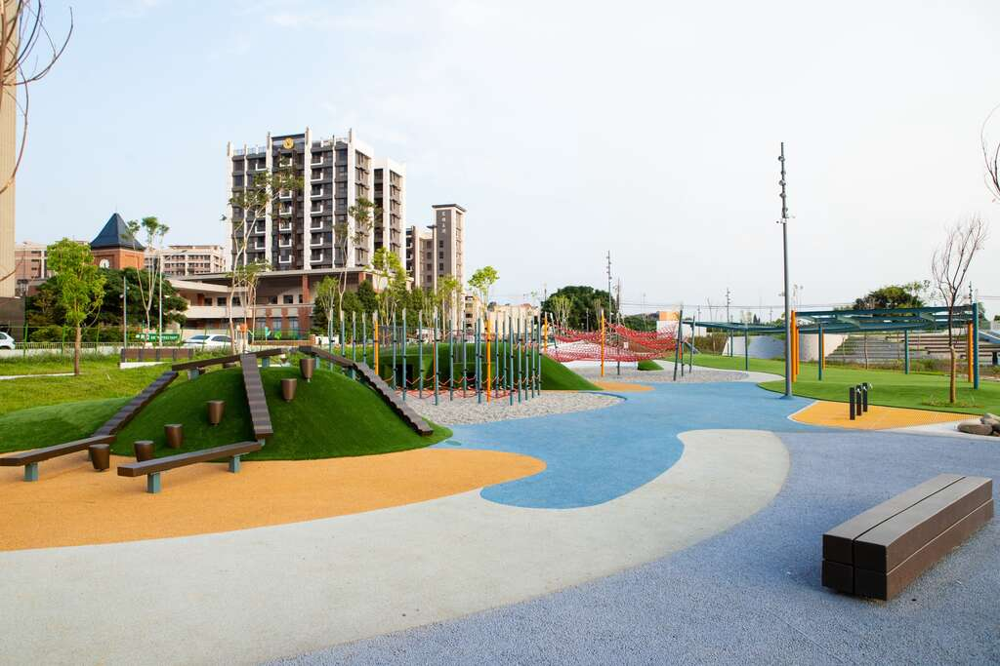
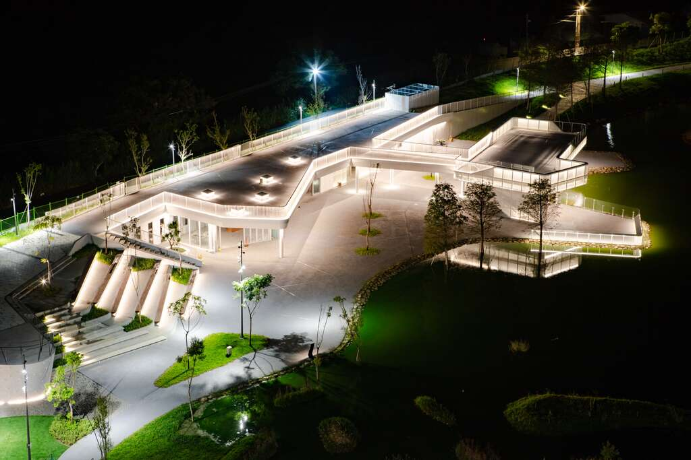

田野照片補充
這裡改用華興池公園實景照片，整理全區、水面、步道、棲地、遊戲場與夜間照明，作為生態調查與地景觀察的影像補充。
照片來源：桃園觀光導覽網「大園區華興池生態埤塘公園」。






用網格整理池畔觀察時看見的環境細節
這裡改用華興池公園實景照片，整理全區、水面、步道、棲地、遊戲場與夜間照明，作為生態調查與地景觀察的影像補充。
照片來源：桃園觀光導覽網「大園區華興池生態埤塘公園」。



